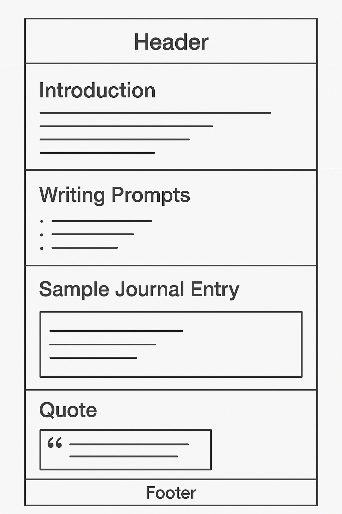

WDD 131 | Project Site Plan
Site Name
Site Name: Spiritual Journaling: Connect & Reflect
Name Description: I chose "Spiritual Journaling: Connect & Reflect" because it directly communicates the site's purpose. "Spiritual Journaling" establishes the main theme, while "Connect & Reflect" highlights the key benefits of this practice: fostering a deeper connection (with oneself and the divine) and encouraging introspection. It's a clear, inspiring, and easy-to-remember name.
Site Purpose
The purpose of this website is to create a simple page focused on **spiritual journaling**, explaining what it is, why it's helpful, and how to get started, all from a faith-based perspective.
The site will include:
- A brief introduction to spiritual journaling.
- A few writing prompts to get started.
- One sample journal entry.
- An inspiring quote related to spiritual writing.
Scenarios
These scenarios represent questions that visitors from our target audience might have when they arrive at the site:
- Scenario 1: "I'm new to spiritual journaling and don't know where to start. Are there any ideas or topics I can use for my first entry?"
- Scenario 2: "I'm looking for a way to deepen my faith and feel more spiritually connected, but I'm not sure if journaling is for me. How could this practice help me?"
- Scenario 3: "I need a bit of inspiration or a reminder about the importance of reflective writing on my spiritual path. Is there a quote or thought that could motivate me?"
Color Scheme
Below is the selected color palette for the site, designed to convey a sense of calm, spirituality, and reflection.
-
Primary Color (
#4A6B8A): Serene Grayish BlueUsage: Background of the main header, color of the section headings (h2), and background of the footer.
-
Secondary Color (
#8FB2BF): Soft Light BlueUsage: Background of blockquote elements.
-
Accent Color (
#D9B38B): Warm BeigeUsage: Left border of blockquote elements, text of the large inspiring quote.
-
Background Color (
#F5F5DC): Off-White / CreamUsage: General background of the page body.
-
Text Color (
#333333): Dark GrayUsage: General body text color, and author text in the inspiring quote.
Typography
The selected typographies aim to optimize readability and set a tone that invites reflection and peace.
-
'Lora', serif
Usage: This font will be used for main headings and the large inspiring quote.
-
'Open Sans', sans-serif
Usage: This font will be applied to all body text on the site.
Wireframe
Here are the sketches of the home page layout for mobile and desktop views. These simple diagrams represent the content arrangement.
Mobile Wireframe

Description: The mobile version prioritizes clarity and vertical scrolling. A compact header with the main title. Content sections are stacked vertically, one below the other. Lists and blockquotes are optimized for a small screen width, maintaining readability. The footer is simple and direct.
Desktop Wireframe (Wide View)
Description: The desktop version utilizes horizontal space. A wide header. The main content is centered on the page, possibly with side margins for comfortable reading. Content sections are clear and well-defined, using the width to present information spaciously. The footer spans the entire bottom width.